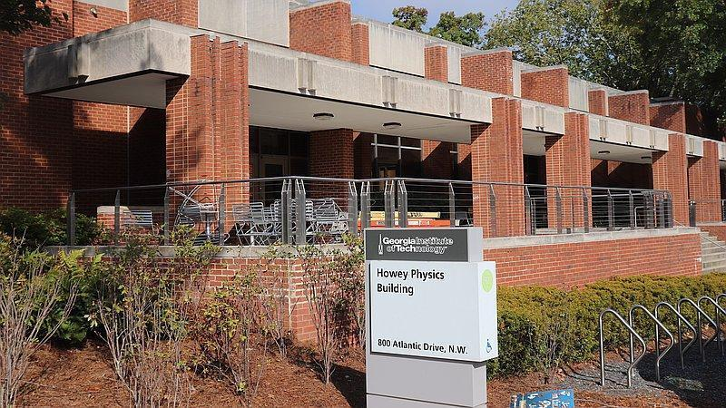
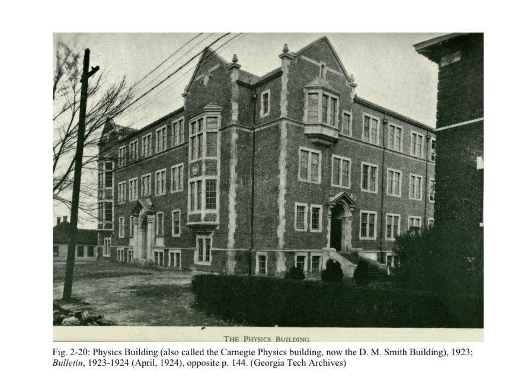
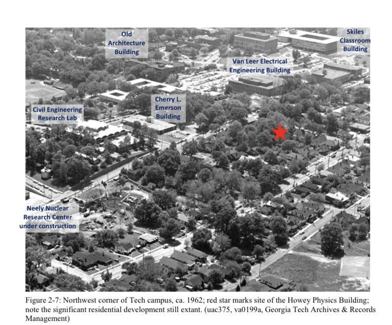
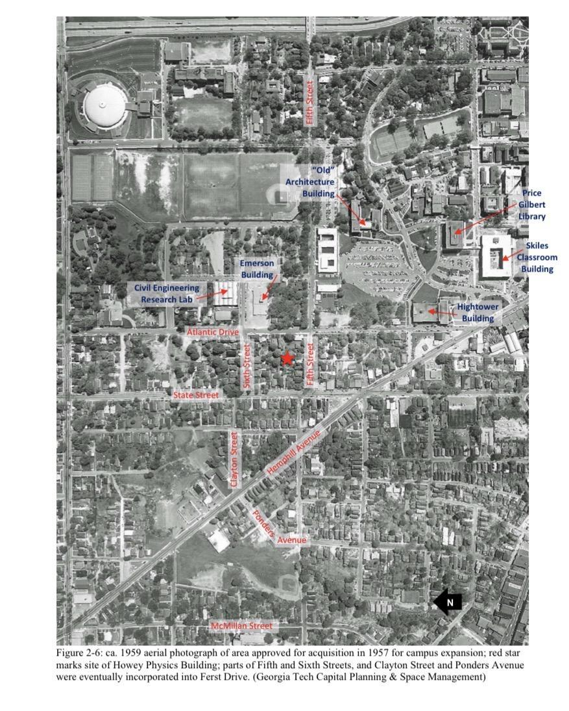
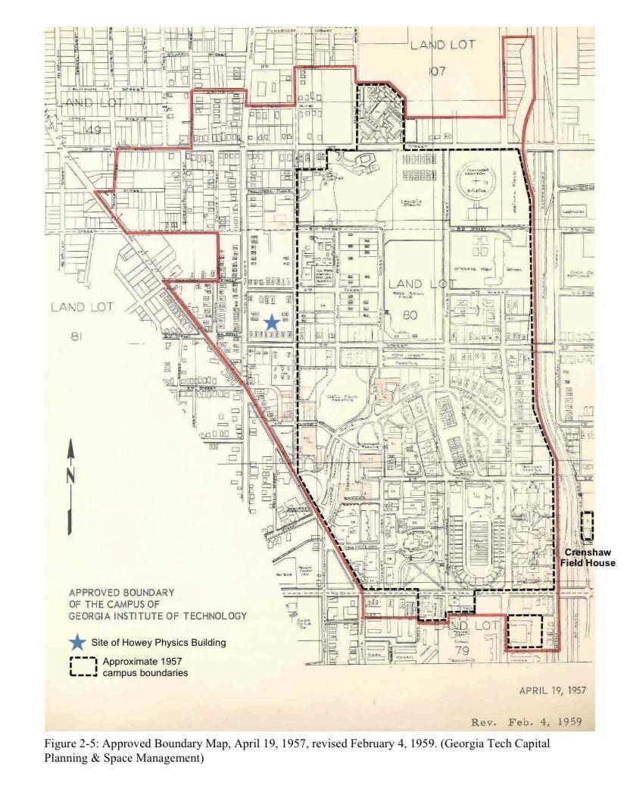
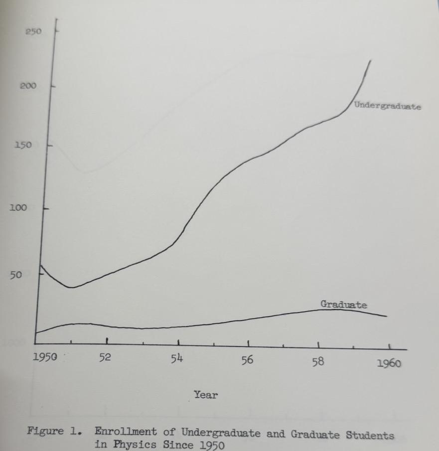

Building History
The School of Physics' home and a window into Georgia Tech's mid-century science expansion.

Georgia Tech's rapid enrollment growth during the 1950s put pressure on classrooms and laboratories. The School of Physics reported that it was seriously cramped for space for several courses. A 1960 proposal called for a new building with 113,850 square feet for classrooms, laboratories, offices, and research facilities.1
The proposal reflects a broader shift: Georgia Tech was expanding its capacity for both teaching and scientific research. Construction began in 1965, and the Joseph H. Howey Physics Building was completed in 1967.2
The earlier Physics Building shown here is not the Howey building: it was later known as D.M. Smith. Together, the two buildings mark different chapters in the department's growth.

The new building included four large lecture theaters, additional classrooms, and a six-story research tower. Those spaces were intended to relieve crowding and support larger classes, advanced physics courses, and scientific research.2
The supplied sources do not describe later renovations, so this page does not assign renovation dates or claim how the building has changed since its opening.




Howey's story connects a specific need—more room for physics teaching and research—to Georgia Tech's growth as a larger research university. The building made that expansion visible in classrooms, lecture theaters, and laboratory space.